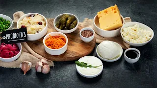

Alimentation & nutrition · 3 min de lecture
Les Probiotiques Naturels en Compléments Alimentaires : Une Clé pour la Santé
Les probiotiques sont des micro-organismes vivants, principalement des bactéries et des levures, qui, lorsqu'ils sont consommés en quantités adéquates, confèrent des bénéfices pour la santé. Ils sont essentiels pour maintenir l'équilibre de notre microbiote intestinal, crucial pour une bonne digestion et un système immunitaire fort. Cet article explore trois types de probiotiques naturels couramment utilisés en compléments alimentaires, leurs posologies, leurs utilisations et leurs bienfaits sur la santé.

1. Lactobacillus acidophilus
Acheter sur Amazon
Lactobacillus acidophilus est l'un des probiotiques les plus connus et les plus utilisés. On le trouve naturellement dans le tractus intestinal, la bouche et le vagin. Les compléments alimentaires contenant Lactobacillus acidophilus sont disponibles sous forme de capsules, de comprimés, de poudres et de produits laitiers fermentés.
- Dosage recommandé : 1 à 10 milliards d'unités formant colonie (UFC) par jour, en fonction des besoins individuels et des recommandations du fabricant.
- Mode de consommation : Il est souvent conseillé de prendre Lactobacillus acidophilus avec de la nourriture pour améliorer son efficacité et réduire les risques de perturbations gastro-intestinales.
Bienfaits sur la Santé
- Amélioration de la digestion : Aide à la décomposition des aliments, réduisant les symptômes de troubles digestifs tels que les ballonnements et les gaz.
- Renforcement du système immunitaire : Stimule la production d'anticorps et améliore la réponse immunitaire.
- Santé vaginale : Maintient un pH vaginal sain et prévient les infections vaginales, comme la vaginose bactérienne et les infections à levures.
2. Bifidobacterium bifidum
Acheter sur Amazon
Bifidobacterium bifidum est un autre probiotique majeur présent dans le tractus intestinal, particulièrement bénéfique pour les nourrissons et les enfants, mais aussi pour les adultes. Ce probiotique se trouve dans les compléments alimentaires sous forme de capsules, de comprimés et de poudres.
- Dosage recommandé : 1 à 5 milliards d'UFC par jour, selon l'âge et les besoins individuels.
- Mode de consommation : Il est préférable de le prendre avant les repas pour maximiser son effet.
Bienfaits sur la Santé
- Santé intestinale : Aide à restaurer l'équilibre de la flore intestinale, surtout après une prise d'antibiotiques.
- Réduction des symptômes du syndrome du côlon irritable (SCI) : Soulage les douleurs abdominales, les ballonnements et la constipation associée au SCI.
- Support immunitaire : Favorise la production de cellules immunitaires, aidant à protéger contre les infections.
3. Saccharomyces boulardii
Acheter sur Amazon
Saccharomyces boulardii est une levure probiotique unique, distincte des bactéries probiotiques. Elle est particulièrement résistante aux conditions acides de l'estomac et aux antibiotiques, ce qui la rend très efficace. Elle est disponible sous forme de capsules et de sachets de poudre.
- Dosage recommandé : 250 à 500 mg par jour, en fonction des besoins spécifiques.
- Mode de consommation : Il est recommandé de prendre Saccharomyces boulardii avec de l'eau ou une boisson non gazeuse, de préférence en dehors des repas.
Bienfaits sur la Santé
- Prévention et traitement de la diarrhée : Efficace contre la diarrhée infectieuse, y compris la diarrhée associée aux antibiotiques et la diarrhée du voyageur.
- Santé intestinale : Aide à équilibrer le microbiote intestinal, réduisant les risques de déséquilibres et d'inflammations.
- Support immunitaire : Renforce la barrière intestinale et stimule les défenses immunitaires locales.
Conclusion
Les probiotiques naturels, lorsqu'ils sont utilisés comme compléments alimentaires, offrent une multitude de bienfaits pour la santé, allant de l'amélioration de la digestion à la prévention des infections et au renforcement du système immunitaire. Lactobacillus acidophilus, Bifidobacterium bifidum et Saccharomyces boulardii sont trois probiotiques particulièrement bénéfiques qui peuvent être intégrés à votre régime quotidien. Comme toujours, il est recommandé de consulter un professionnel de santé avant de commencer tout nouveau complément pour s'assurer qu'il est adapté à vos besoins individuels.
Les liens ci-dessus sont des liens d'affiliation. En
utilisant le lien pour effectuer un achat, vous soutenez ce blog tout en
bénéficiant des bienfaits de ce super-aliment. Merci pour votre soutien!
Les informations présentes sur Bien et Être sont fournies à titre informatif
uniquement. Elles ne constituent ni des conseils médicaux ni des prescriptions.
Avant de faire tout changement dans votre régime alimentaire ou votre routine
d'exercice, veuillez consulter un professionnel de santé qualifié. Votre
bien-être est notre priorité, et il est important d'obtenir des conseils personnalisés
et appropriés de la part de votre médecin.
Guides, outils gratuits et livres pour prendre soin de toi au quotidien.
Découvrir les produits Chest0